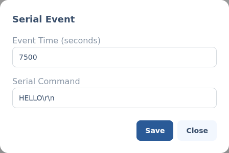

Serial (UART) events.
A serial event sends a raw command over a generic serial channel at a point on the timeline — the catch-all for UART devices that don't have a dedicated editor of their own.
§Add a serial event
Add a Generic serial channel to your script (set the module up first under Other serial modules), then click its track at the time you want the command sent. The serial event editor opens.
i
Dedicated devices have their own editors
A Maestro uses the servo and GPIO editors; a Kangaroo X2 and an HCR board have theirs. Use a serial event for any other UART device.
§The editor

- Event Time (seconds) — where on the timeline the command is sent.
- Serial Command — the text to send over the wire. AstrOs transmits it to the device as-is, so use whatever command syntax that device expects.
Back to Scripting animations.